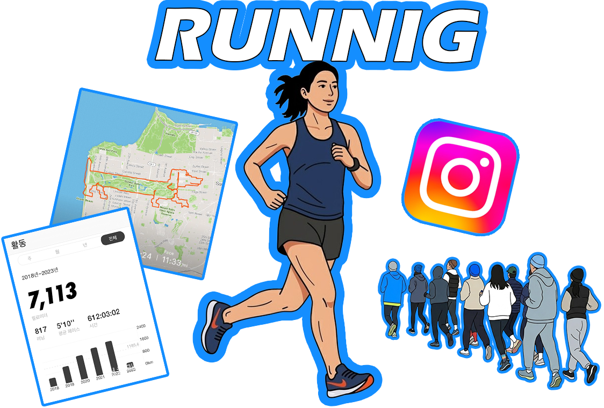

과거 어르신들의 전유물이나 지루한 유산소 운동으로 여겨졌던 ‘달리기’가 최근 MZ세대를 중심으로 가장 힙하고 트렌디한 문화로 재탄생했다. 이제 도심의 공원이나 강변, 혹은 늦은 밤 빌딩 숲 사이에서
무리를 지어 달리는 젊은이들을 쉽게 발견할 수 있다.
MZ세대 러닝 문화의 핵심은 ‘러닝크루(Running Crew)’에 있다. 이들은 단순히 혼자 고독하게 뛰는
것이 아니라, 소셜 미디어나 소모임 앱을 통해 자발적으로 크루를 결성하고 정기적으로 모여 함께 달린다.
이러한 크루 문화는 ‘달리기’라는 공통의 목적 아래 느슨하지만 단단한 연대감을 제공한다.
서로의 페이스를 이끌어주고 완주를 격려하는 과정에서 깊은 소속감을 느끼며, 운동이 끝난 후에는
가볍게 친목을 도모하는 등 새로운 형태의 사교 장으로 기능하고 있다.
소셜 미디어를 빼놓고는 지금의 러닝 열풍을 설명할 수 없다. MZ세대 러너들은 달리기를 마친 후,
러닝 앱을 통해 기록된 자신의 이동 경로, 페이스, 주행 거리 그래픽을 캡처하고 이를 인스타그램에
러닝스타그램 등 해시태그와 함께 업로드한다.
이는 단순히 운동을 했다는 사실을 알리는 것을 넘어, ‘자신의 삶을 주도적으로 관리하는 건강하고
부지런한 나’를 증명하는 갓생 루틴의 대표적인 인증 방식. 타인의 ‘좋아요’와 격려 댓글은 러닝을
지속하게 만드는 강력한 도파민이자 긍정적인 피드백으로 작용하며 유행을 더욱 빠르게 확산시키고 있다.